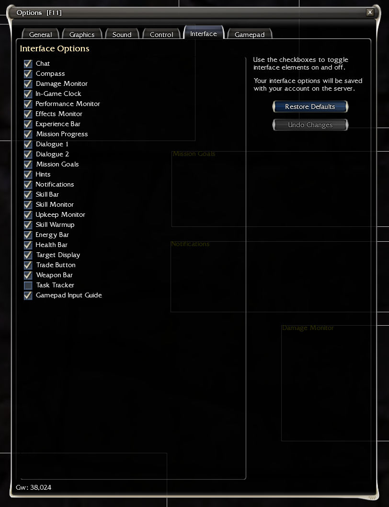
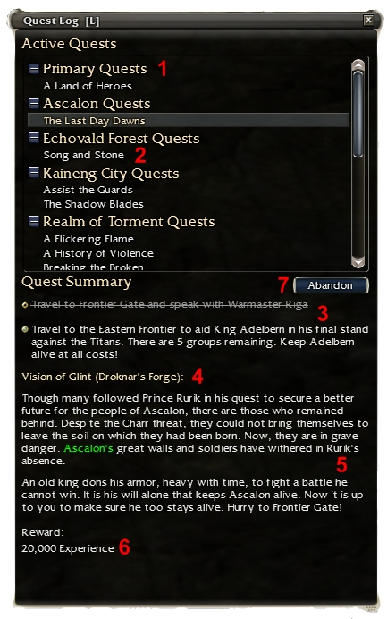
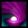
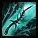
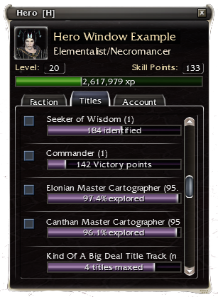

Core Systems & Reforged Mechanics
Guild Wars pairs an uncluttered Level 20 ceiling with tactical combat math that rewards understanding attributes, armor breakpoints, and instanced party design. This reference covers every core rule alongside the global quality-of-life upgrades and character modes introduced in Guild Wars Reforged.
Reforged Client Updates vs Character Creation Modes
Every Guild Wars account receives global engine, UI, and Steam Deck upgrades automatically. During character creation, you also choose optional gameplay toggles whose rules stay attached to that character.
| System / Feature | Standard Character (Global Client) | Reforged Mode | Dhuum's Covenant / Melandru's Accord |
|---|---|---|---|
| UI, Controller & Graphics | Full XInput/Steam Deck UI, HD skill icons, Task Tracker, expanded Compass rings, bloom/MSAA/SSAO | Identical global client and UI | Identical global client and UI |
| Base Campaign Unlock | Reforged Edition bundles Prophecies, Factions, and Nightfall cleanly | Identical account access; Hero unlock questline active in Prophecies | Identical account access |
| XP & Gold Boost | Standard mission and drop payouts | +5% XP & gold in Prophecies Normal Mode zones; boosted mission/bonus gold | Can be stacked alongside Reforged Mode on veteran alts |
| Skill Trainer Costs | Normal scaling curve up to 1,000g | 50% cheaper Prophecies skill trainers (smooth cap at 500g) | Follows underlying Standard or Reforged setting |
| Early Ascalon Heroes | Wait until Lion's Arch (MOX), Istan, or Boreal Station | Unlocks Devona (Pre-Searing) and Ghost of Althea (Post-Searing) permanently | Available if Reforged Mode is also active |
| Death & Storage Restrictions | Normal respawns, full trading, Xunlai Chest storage, and Material Crafters | None; full trading and Xunlai storage enabled (recommended for first run) | Dhuum: Hardcore badge lost permanently on first death. Melandru: Permanent solo ironman lock blocking player trades, bank, and crafters |

Outposts, Explorable Instances & Party Size Scaling
Guild Wars splits the world strictly into two zone types. Towns and Outposts are shared public lobbies containing merchants, armorers, skill trainers, storage chests, and Mission Start panels, and allow free attribute resets whenever you step inside. Leaving an outpost through its glowing portal spawns a private Explorable Area or Cooperative Mission scaled exclusively for your current party.
Party limits expand step-by-step alongside your campaign progress so early tutorial zones keep micro-management gentle before opening full 8-member tactical squads. Clearing any campaign's final mission unlocks Hard Mode account-wide on Level 20 characters for that entire campaign (boosting foes to Level 24 to 30, improving rare drops, and unlocking Vanquishing and Master-rank Mission books).
| Region / Progression Stage | Max Party Size | Hero Cap (Default) | Notes |
|---|---|---|---|
| Pre-Searing Ascalon | 2 | 1 Hero (Devona in Reforged Mode) | Soloable with starter Elementalist; Devona tanks Charr in The Northlands |
| Post-Searing Ascalon & Starting Islands | 4 | Up to 3 | Prophecies Ascalon (up to Gates of Kryta / Yak's Bend border), Shing Jea Island, Istan |
| Northern Shiverpeaks & Early Kryta | 6 | Up to 5 | Yak's Bend, Borlis Pass, Frost Gate, Lion's Arch, D'Alessio Seaboard, Divinity Coast |
| Midgame & Endgame Zones (Worldwide) | 8 | Up to 7 Heroes | Sanctum Cay onward, Kaineng Center onward, Consulate Docks onward, all of Eye of the North |

Levels, Attribute Point Cap (200) & Rune Stacking
You reach the maximum character level of Level 20 early in the adventure (providing 170 Attribute Points from leveling). Completing both native campaign +15 Attribute Point quests grants your final 200 Attribute Point total, while Headpiece bonuses (+1) and Armor Runes (+1/+2/+3) push core lines to Rank 14 to 16.
| Attribute Rank | Point Cost for Next Rank | Cumulative Points Spent | Tactical Sweet Spot |
|---|---|---|---|
| Rank 1 | 1 | 1 | Splash utility |
| Rank 2 | 2 | 3 | Hard Res (Flesh of My Flesh / Res Chant) |
| Rank 3 | 3 | 6 | Early secondary healing / buffs |
| Rank 4 | 4 | 10 | Splash Command / Shout duration |
| Rank 5 | 5 | 15 | Pre-Searing early core |
| Rank 6 | 6 | 21 | Secondary utility baseline |
| Rank 7 | 7 | 28 | Cheap breakpoint (costs escalate above 8) |
| Rank 8 | 9 | 37 | Strong secondary / third attribute cap |
| Rank 9 | 11 | 48 | Weapon Requirement threshold (Req 9) |
| Rank 10 | 13 | 61 | Standard off-attribute invest (+ runes) |
| Rank 11 | 16 | 77 | Budget split when running two 11-point lines |
| Rank 12 | 20 | 97 | Maximum base spend (hits 16 with +1 Headpiece & Superior Rune) |
Armor Rating (AL), Damage Types & Earliest Max Crafters
Every 40 points of Armor Rating (AL) cuts incoming Physical and Elemental damage roughly in half relative to the baseline Level 20 expectation of 60 AL. Enemies target specific hit locations: Chest (37.5%), Leggings (25%), and Head / Gloves / Boots (12.5% each), so upgrading Chest and Leggings first matters most if gold is tight.
Armor-Ignoring Damage (almost all Mesmer Domination damage like  Energy Surge, Necromancer health degen/sacrifice, and Ritualist spirits/weapon spells) bypasses Armor Rating completely, which is why Mesmerway and Spirit Spammers melt high-level Hard Mode foes with extreme armor.
Energy Surge, Necromancer health degen/sacrifice, and Ritualist spirits/weapon spells) bypasses Armor Rating completely, which is why Mesmerway and Spirit Spammers melt high-level Hard Mode foes with extreme armor.
| Max Armor Crafter | Outpost & Campaign | Warrior / Paragon AL | Ranger / Sin / Dervish AL | Caster AL (E/Mo/N/Me/Rt) | Base Cost & Key Advantage |
|---|---|---|---|---|---|
| Wajjun Bazaar Crafter | Wajjun Bazaar (Factions) | 80 | 70 | 60 | 600g / piece + low mats; cheap emergency AL cap (missing Insignia slot; skip for Kaineng if you have ~5p) |
| Maoh / Tiamun / Kaineng Armorers | Kaineng Center (Factions) | 80 | 70 | 60 | 1,000g / piece + mats; full Rune and Insignia slots, reachable at Level 10 via Lion's Arch |
| Sunspear Crafters | Consulate Docks (Nightfall) | 80 | 70 | 60 | 1,000g / piece + mats; unlocked right after Blacktide Den during Hero recruitment loop |
| Boreal Station Armorer | Boreal Station (Eye of the North) | 80 | 70 | 60 | 1,000g / piece + mats; available inside first EotN outpost without missions |
| Droknar's Forge Armorer | Droknar's Forge (Prophecies) | 80 | 70 | 60 | 1,000g / piece + mats; classic Prophecies cap after crossing Crystal Desert (much later than Kaineng) |
Weapon Customization & 40/40 Caster Sets
Combat Statuses, Corner-Blocking & Signet of Capture
Guild Wars tracks three distinct combat debuff/buff families, each cleared by different skills: Conditions (Bleeding, Burning, Poison, Deep Wound, Weakness, Blind, Crippled, Dazed) drop from Condition removal; Hexes (purple negative spell icons) require Hex removal like  Cure Hex; and Enchantments (up-arrow buffs on foes) are stripped or punished by Drain Enchantment.
Cure Hex; and Enchantments (up-arrow buffs on foes) are stripped or punished by Drain Enchantment.
Standing behind narrow rock corners or archways after pulling causes chasing enemies to bunch onto a single spot ("balling up"), letting AoE skills like  Fire Storm,
Fire Storm,  Energy Surge, and
Energy Surge, and
Elite Skills (gold-bordered skills limited to 1 per bar) unlock via  Signet of Capture. Buy Signet of Capture (250g + 1 Skill Point) in Lion's Arch, Kaineng Center, or Kamadan, keep it equipped while killing a matching-profession Boss, stand near the boss's corpse before it fades, and activate the Signet to learn any unlocked skill from that boss's bar permanently on your account (unlocking it for Heroes too).
Signet of Capture. Buy Signet of Capture (250g + 1 Skill Point) in Lion's Arch, Kaineng Center, or Kamadan, keep it equipped while killing a matching-profession Boss, stand near the boss's corpse before it fades, and activate the Signet to learn any unlocked skill from that boss's bar permanently on your account (unlocking it for Heroes too).
